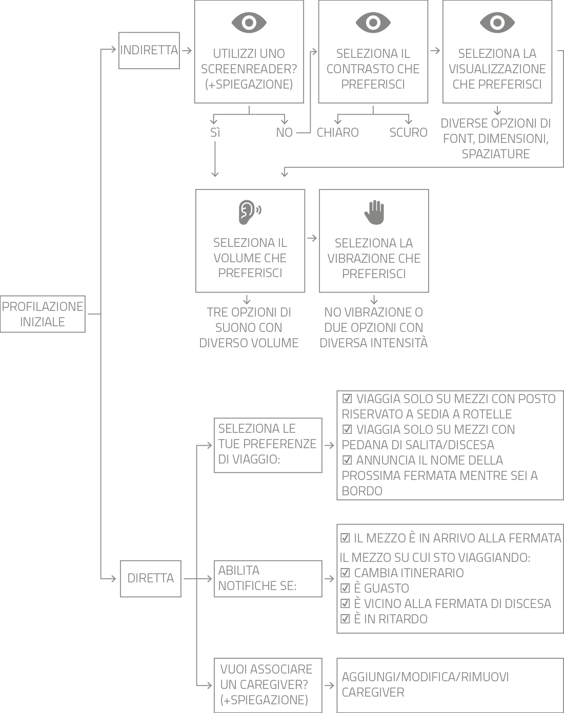
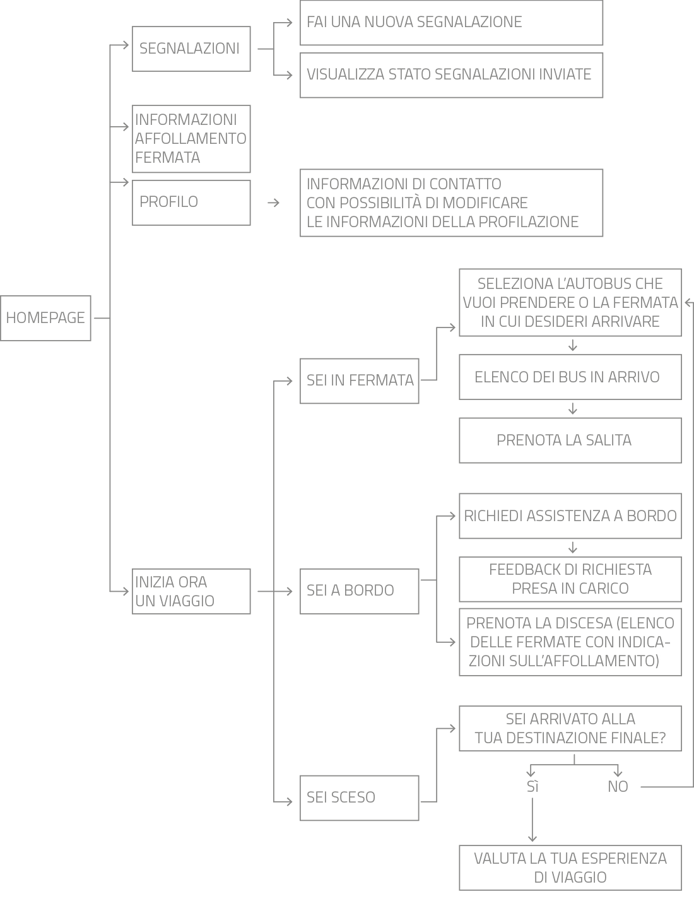
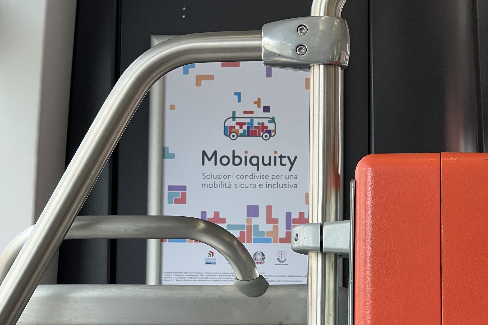
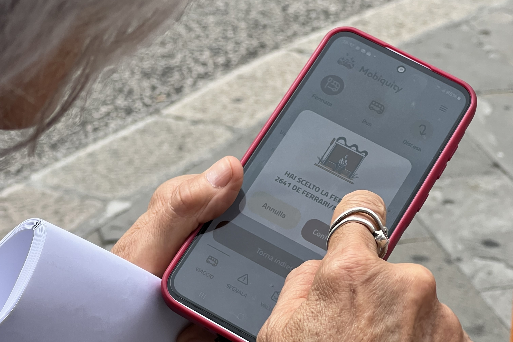
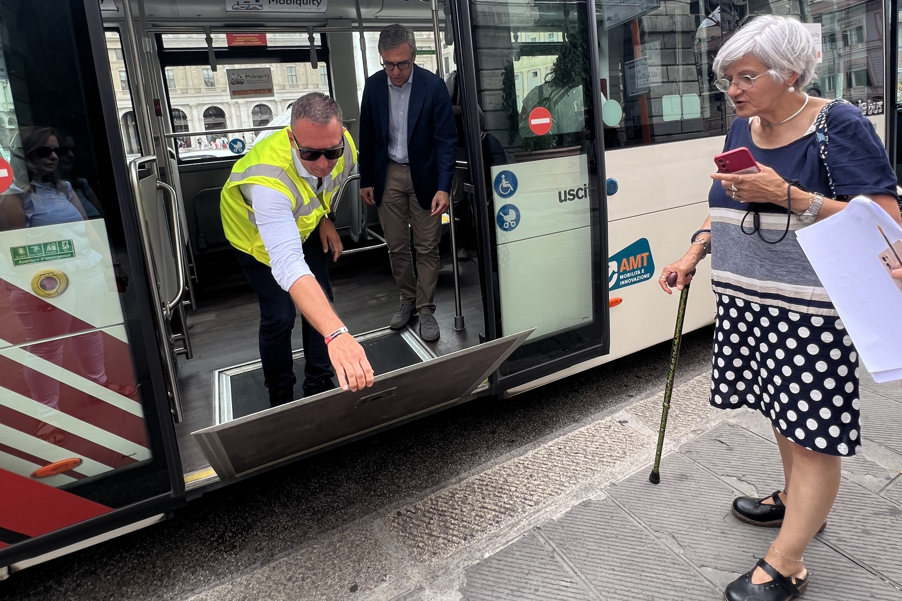
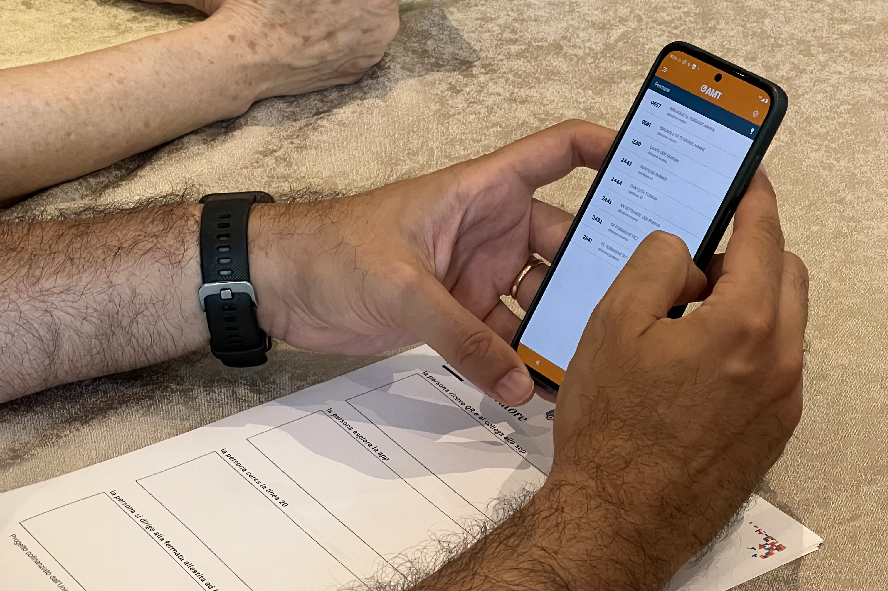
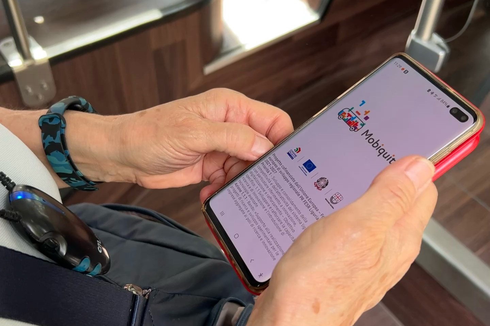
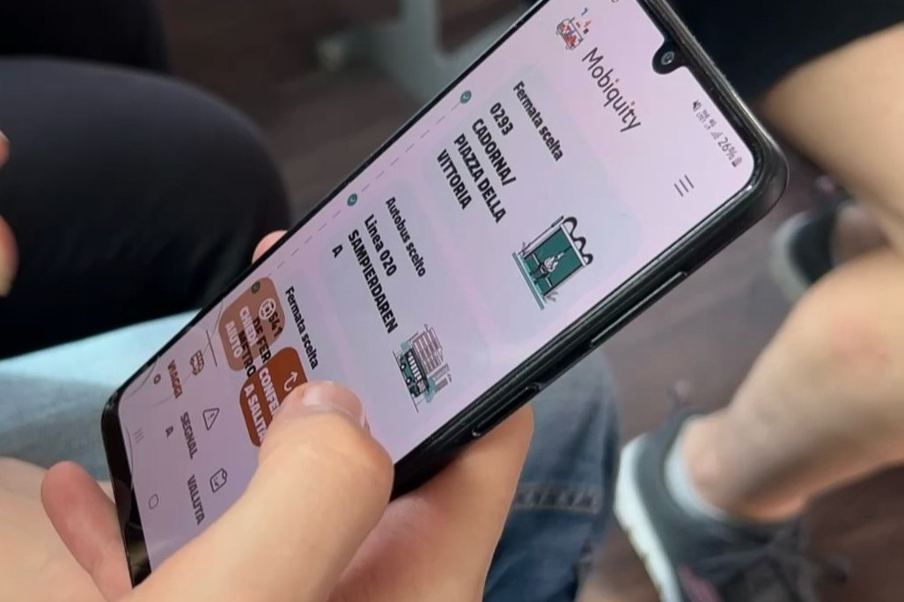
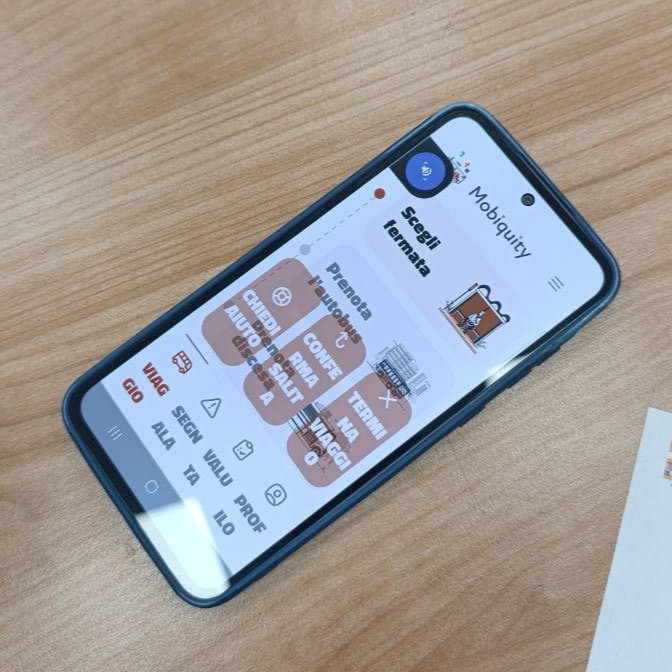

Designing for facilitation
Progettazione di interfacce mobili adattive e user journey di accessibilità personalizzata per il trasporto pubblico inclusivo.
Il Contesto e La Sfida
Il progetto Mobiquity nasce per abbattere le barriere di accessibilità che caratterizzano il trasporto pubblico locale nella città metropolitana di Genova, rispondendo alle esigenze concrete delle persone con disabilità e delle Persone a Mobilità Ridotta (PMR). Muoversi in un contesto urbano complesso e usufruire dei mezzi di trasporto rappresenta ancora oggi una sfida quotidiana per un'ampia fetta di cittadini.
In risposta a tali criticità, il progetto definisce una piattaforma digitale inclusiva, concepita per semplificare l'accesso ai servizi di trasporto e personalizzare l'esperienza di viaggio in base alle specifiche necessità dell'utente.
L'iniziativa si fonda sulla stretta sinergia di un partenariato multisettoriale genovese composto da TBridge BV.Tech S.p.A., Nextage S.r.l., LogOil S.r.l., Aitek S.p.A., GGallery S.r.l., AMT S.p.A. e l'Università di Genova. A supporto delle attività di ricerca e co-design sono stati coinvolti stakeholder istituzionali chiave — tra cui il Consiglio Regionale per la Disabilità e l'Ufficio del Disability Manager del Comune di Genova — e numerose associazioni del territorio: l'Associazione Ligure Ipovedenti (ALI), la Fondazione CEPIM, la Fondazione Chiossone, l'Unione Italiana Ciechi (UIC, sezioni di Genova e Chiavari), l'AISM, il corso UniGe Senior e l'ANGLAT.
Ricerca e Metodologia: User Research e Co-Design
Il percorso progettuale ha adottato un approccio metodologico rigorosamente partecipativo, ispirato ai principi del Design for All e del Participatory Design, integrando il punto di vista degli utenti finali fin dalle prime fasi di ideazione.
Dal punto di vista della ricerca, ho curato l'analisi e la sintesi dei fabbisogni emersi dai focus group e dalle sessioni di osservazione condotte con le associazioni. Traducendo queste evidenze qualitative in requisiti di progetto, ho strutturato l'architettura informativa e i flussi logici della piattaforma.
Design Adattivo e Profilazione Duplice
Per superare i limiti dei modelli standardizzati e offrire un'accessibilità realmente su misura, ho ideato e strutturato il sistema di profilazione dell'applicazione. Questa interazione è prevista e strutturata al primo accesso all'applicazione, ed è pensata appositamente per personalizzare la modalità di fruizione dei contenuti e dei servizi in base al profilo dell'utente. Partendo dalla consapevolezza che ogni persona, specialmente con disabilità temporanee o permanenti, possiede esigenze uniche nell'interazione tecnologica, l'obiettivo primario è garantire un'esperienza esaustiva ma priva di sovraccarico cognitivo e informativo. Il flusso si articola in due direttrici complementari:
- Profilazione indiretta: Rileva in modo discreto le preferenze sensoriali dell'utente (tramite stimoli visivi, tattili o acustici), configurando automaticamente parametri chiave quali la dimensione dei font, i contrasti cromatici o l'intensità dei feedback senza richiedere di esplicitare forzatamente le proprie limitazioni.
- Profilazione diretta: Consente una configurazione rapida e mirata delle specifiche necessità di mobilità (come il filtraggio dei mezzi in base alla presenza di postazioni per carrozzine o la gestione del collegamento con i caregiver), prevenendo efficacemente il sovraccarico informativo.

User Flow e Architettura dell'Applicazione
Superata la fase iniziale di profilazione, lo user flow dell'applicazione mobile Mobiquity accompagna l'utente attraverso un percorso fluido e personalizzato, orientato alla fruizione autonoma del trasporto pubblico genovese.
Grazie all'interazione tra i mezzi AMT dotati di tecnologia beacon e l'applicazione, il sistema segnala l'arrivo dei mezzi, ne evidenzia le dotazioni di bordo e facilita la comunicazione tempestiva con il conducente. Completano l'architettura le sezioni dedicate alla gestione in tempo reale del viaggio, alla segnalazione di barriere architettoniche e alla compilazione dei questionari di gradimento.

Sperimentazione e Sessioni di Living Lab
L'efficacia dell'applicazione è stata validata sul campo attraverso sessioni di Living Lab condotte con utenti reali, coordinate dal team di progetto e dalla Disability Manager del Comune di Genova, con la mia partecipazione attiva nel ruolo di ricercatrice e moderatrice dei test per la raccolta strutturata dei dati qualitativi.
La prima sessione (17 giugno 2025) ha testato la versione alfa nel foyer del Teatro Carlo Felice, mentre la seconda (28 ottobre 2025) ha validato la versione beta evoluta presso la rimessa AMT di via Bobbio, alternando simulazioni indoor a test dinamici su strada a bordo di autobus attrezzati con beacon Bluetooth Low Energy (BLE).
Dal punto di vista del personale di bordo, i test hanno evidenziato la necessità di strumenti di notifica integrati e di percorsi di formazione mirati, confermando quanto una comunicazione multimodale tempestiva ed efficiente sia cruciale per ridurre il disorientamento e migliorare la qualità del servizio offerto.
I partecipanti hanno espresso un giudizio complessivamente favorevole sugli aggiornamenti della versione beta, riscontrando una maggiore fluidità nei flussi di navigazione. Rimangono tuttavia margini di miglioramento legati all'interazione con i lettori di schermo (screen reader), un ambito complesso a causa dell'elevata frammentazione delle impostazioni e delle piattaforme mobili.
Galleria delle Sessioni di Living Lab
Una panoramica visiva delle sessioni di test e co-design sul campo, dai test preliminari in ambienti protetti fino alla sperimentazione pratica sui mezzi di trasporto pubblici.







Conclusioni e Competenze Acquisite
I risultati confermano la bontà di un approccio iterativo e partecipativo, capace di recepire tempestivamente i feedback degli utenti per correggere criticità percettive, cognitive e operative.
Le direttrici di sviluppo future comprendono il potenziamento dei comandi vocali, la semplificazione delle gerarchie informative, l'integrazione di sistemi di comunicazione sincrona con i conducenti e la creazione di tutorial interattivi dedicati a chi possiede una minore alfabetizzazione digitale.
La forte presenza di utenti anziani nel campione ha evidenziato quanto l'analfabetizzazione digitale incida sull'efficacia dell'interazione, sottolineando l'importanza di progettare secondo i principi dell'active ageing e di considerare l'accessibilità non solo come conformità tecnica, ma come autentico strumento di inclusione sociale.
Nonostante le inevitabili limitazioni legate a vincoli di tempo e risorse, il progetto ha rappresentato un'occasione straordinaria di crescita professionale, consolidando competenze chiave nella ricerca partecipativa e nella gestione di processi complessi.
Mobiquity si è rivelato un esercizio formativo di alto profilo nel campo del lavoro in team, del co-design e della facilitazione multi-stakeholder. Dialogare quotidianamente con sviluppatori, designer, enti di trasporto e amministrazioni locali ha richiesto un costante problem solving e l'applicazione di principi di UX design inclusivo basati su una profilazione duplice. Ogni fase ha affinato la mia sensibilità verso il Design Universale, trasformando le sfide operative in un solido traguardo di crescita professionale.